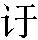

亢德先生：
大札与《人间世》[175]两本，顷同时拜领，讽诵一过，诚令人有萧然出尘之想，然此时此境，此作者们，而得此作品等，固亦意中事也。语堂先生及先生盛意，嘱勿藏拙，甚感甚感。惟搏战十年，筋力伤惫，因此颇有所悟，决计自今年起，倘非素有关系之刊物，皆不加入，藉得余暇，可袖手倚壁，看大师辈打太极拳，或夭矫如撮空，或团转如摸地，静观自得，虽小品文之危机临于目睫，亦不思动矣。幸谅其懒散为企。此复，即请
著安。
迅 顿首 四月七日
注 释
[175] 《人间世》 小品文半月刊，林语堂主编，陶亢德、徐

编辑。1934年4月5日在上海创刊，1935年12月20日停刊。